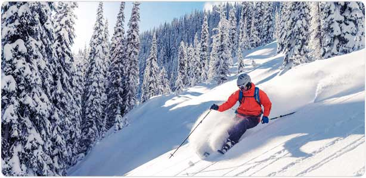
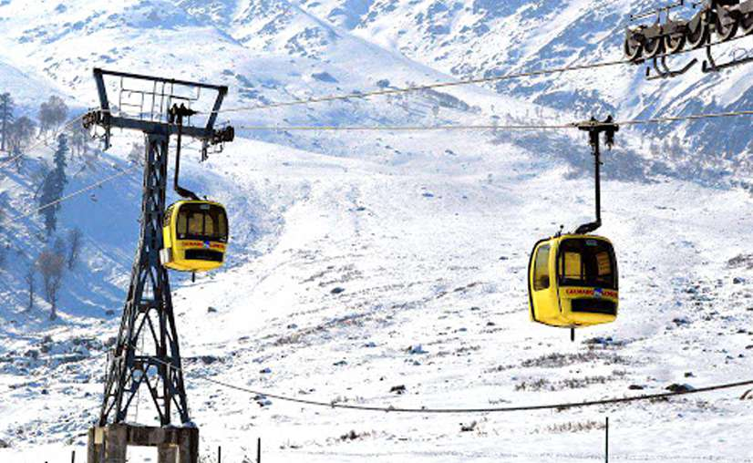
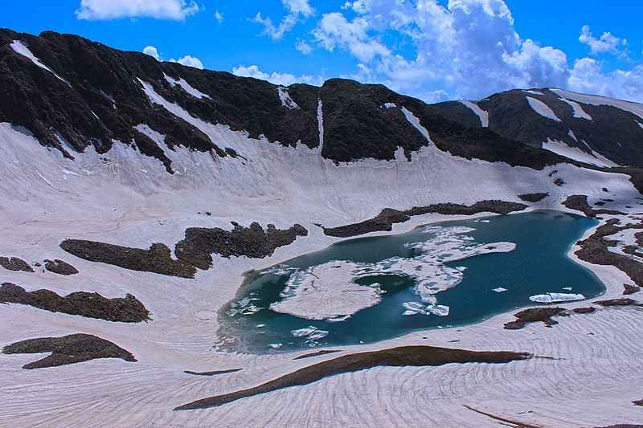

The name “Gulmarg” meaning meadow of flowers truly lives up to its name. The area is filled with excellent views
of the glorious Himalayas and the scenic beauty is a must-watch. Nature is a beautiful gift of the almighty and
Gulmarg is a perfect example of that!
How to reach there?
The small town called Gulmarg is located in the Pin Panjal range of the gargantuan Himalayan mountains in Jammu and Kashmir.
The nearest airport to Gulmarg is Srinagar Airport which is well-connected with all the major airports of the country.
Gulmarg is around 60 kms from Srinagar by road, which can be reached by self-drive car. However, due to winding high
altitude roads, it takes a long time.
Top things to do?
The attractions are many in this Himalayan town so are adventure sports.The Gulmarg Biosphere Reserve is undoubtedly one
of the best places to visit in Gulmarg.For anyone keen to explore the best beauties of Gulmarg, there can't be any better
option than visiting to Alpather Lake.If you’re religious and plan to visit the holy places around Gulmarg then Baba Reshi’s
shrine is a must-see.Moreover,if you’re an adventure junkie and are in Gulmarg then you are lucky, my friend. From Skiing on the snowy
mountain slopes to rafting on the vicious mountain rivers, Gulmarg can fulfill daily dose of adrenaline rush to its fullest.


